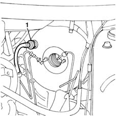
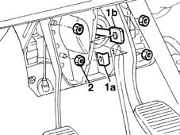

3330D10 brake servo - r+r - includes separation from master cylinder (pump)
- Path
- Procedures > 33 BRAKING SYSTEM > 3330 HYDRAULIC BRAKING SYSTEM > 3330D brake vacuum system > 3330D10 brake servo - r+r - includes separation from master cylinder (pump)
- Kind
- repair procedure (removal / refitting; the operation number is the code)
- Applies to
- all engines; all production periods
- Interactive page
- https://sloeber94.github.io/elrnDB-fMltpl/en/#/2891629
Applies to: all engines; all production periods
 Removing
Removing
 Refitting
Refitting1048A10 AIR CLEANER FILTERING ELEMENT - REPLACE
3330C10 (PUMP) - MASTER CYLINDER R.R.
1. Disconnect the vacuum pump pipe from the single-acting valve on the brake servo.

Applies to: all engines; all production periods
1. Remove the spring (1a) and separate the rod (1b) for the brake servo from the brake pedal.
2. Undo the fixing nuts and, working via the engine compartment, remove the brake servo.

Applies to: all engines; all production periods
Refitting
RemovingFit the brake servo in the housing.
Tighten the nuts fixing the brake servo to the bodyshell to torque.
 | Fastening | Component | Ø | Value (daNm) |
|---|---|---|---|---|
- | Nut | PEDAL MOUNT | M8 | 2.2 |
Secure the rod for the brake servo to the pedal using the special retaining spring.
Connect the vacuum intake pipe.
Topics linked from this page (3)
- 1048A10 AIR CLEANER FILTERING ELEMENT - REPLACE
- 3330C10 (PUMP) - MASTER CYLINDER R.R.
- 5530B10 battery - r+r